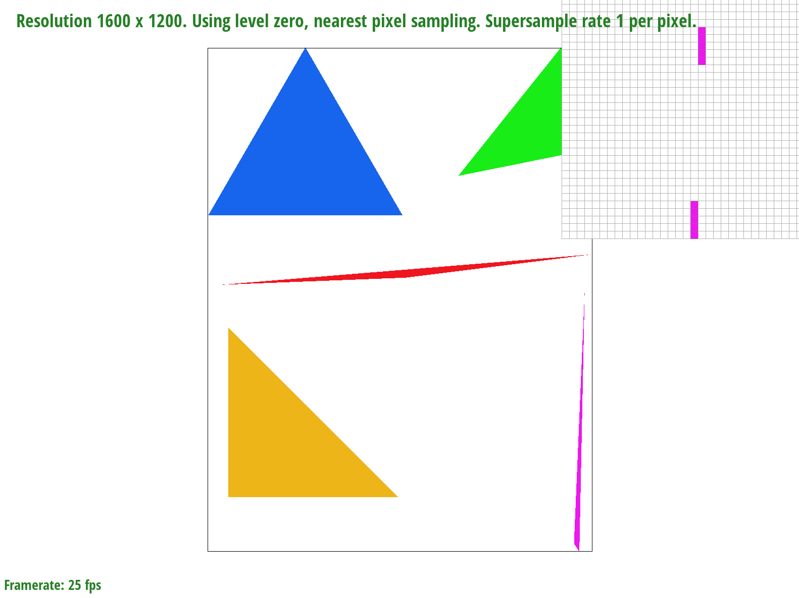
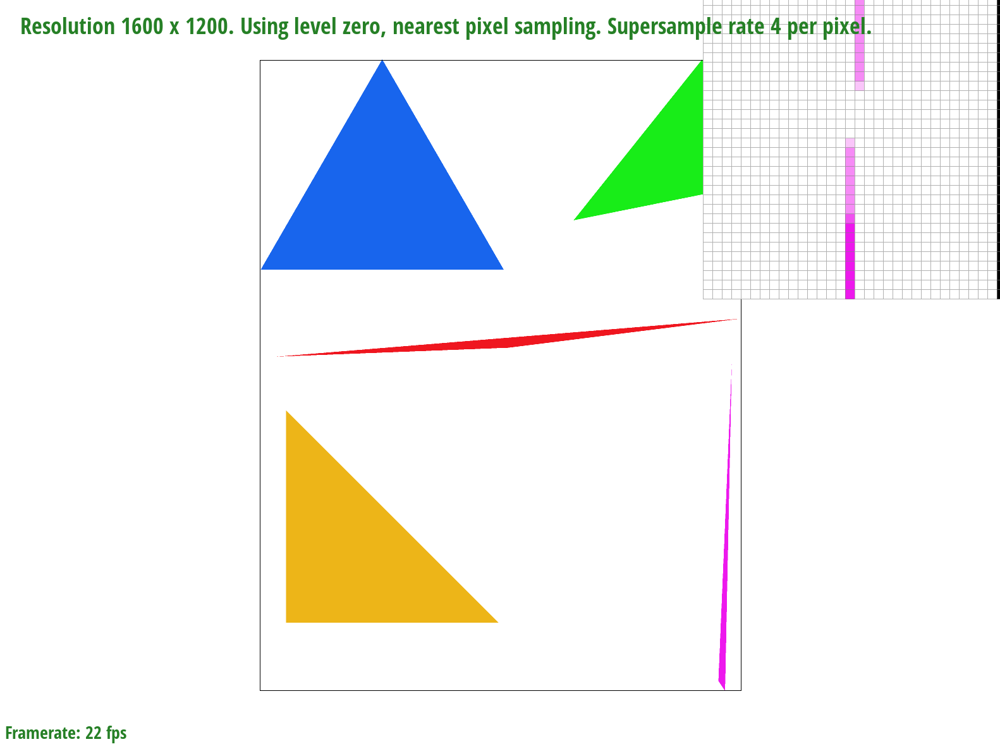
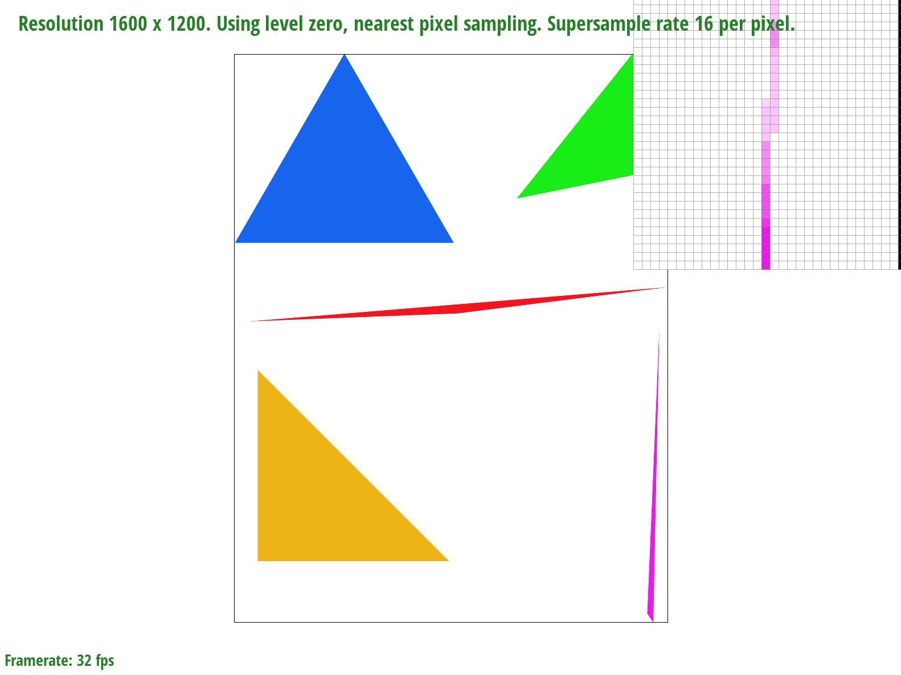
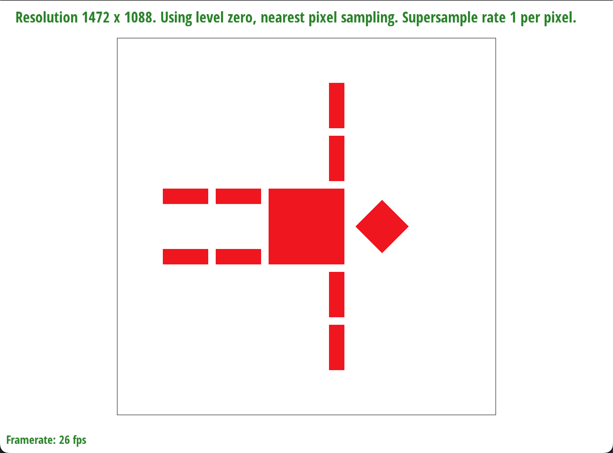
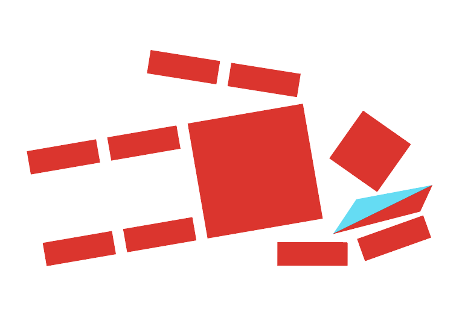
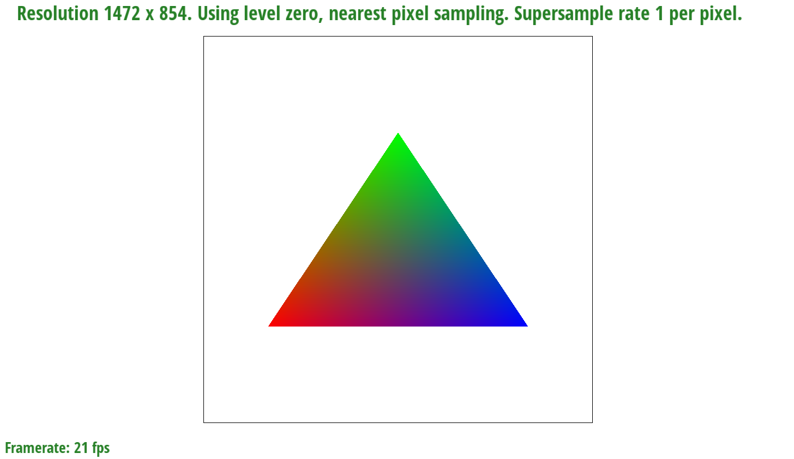
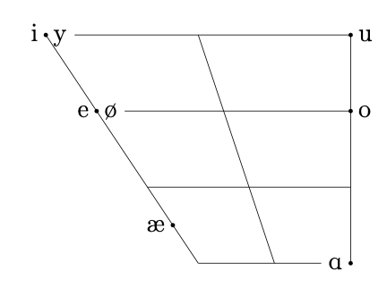
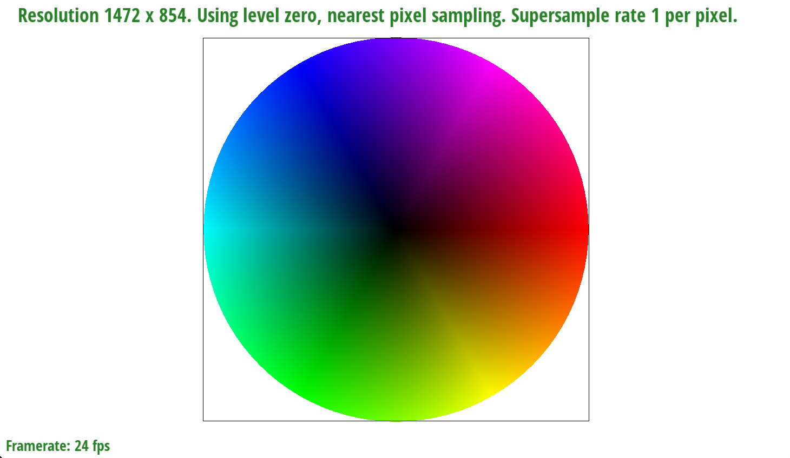
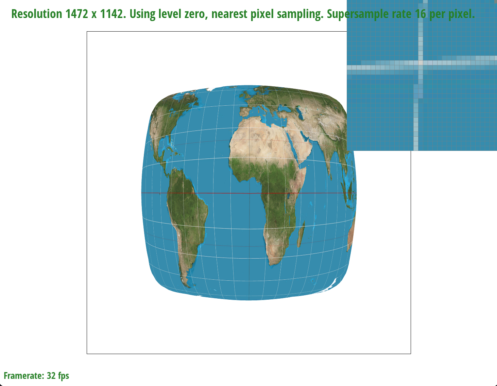
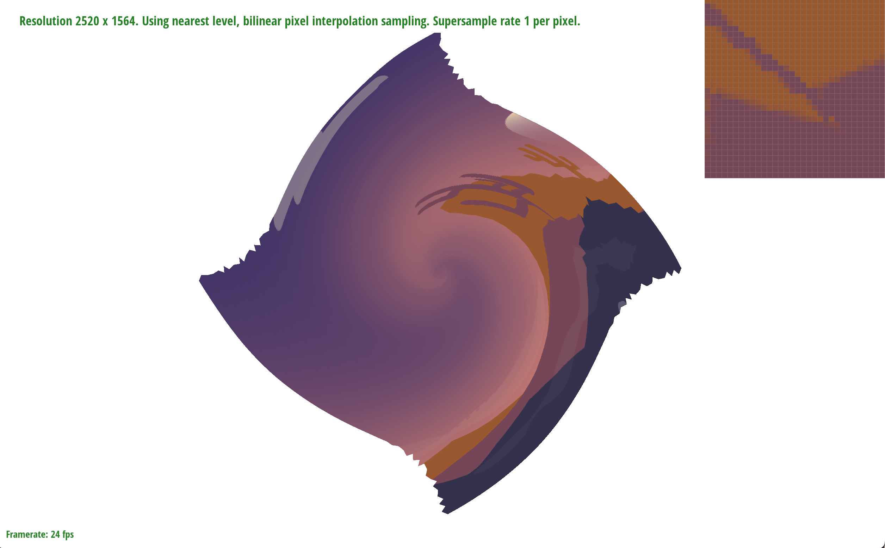

In this homework, I implemented a basic rasterizer that is capable of rendering svg images. It is able to render triangles of solid colors or interpolated colors between the three vertices, and triangles that are mapped to textures. In addition, I implemented supersampling for antialiasing of all triangles, and bilinear, trilinear, and nearest-level sampling for textured triangles. The most interesting thing that I learned was the math behind the graphics, especially since I do a lot of vector art and illustration, learning the math behind it was super cool, especially for barycentric coordinates, since I use that a lot in creating graphs and diagrams.
To ensure that the winding order of the triangles is consistent, I take the cross product of two edges, and if the cross product of these two edges is negative, then I swap the non-shared points of the two vectors, resulting in a consistent counter-clockwise winding order. Then, I iterate through each pixel (or subpixel) in the bounding box and perform a line test on the pixel to determine if it is within the triangle. If it is, then I assign the pixel a color in the sample buffer, and render the resulting buffer to the screen. Since I check each point in the bounding box once, my implementation performs exactly as well as an implementation that checks each point once. Below is an image of test4.svg:

To supersample, I calculated the internal subpixel positions so that they are equally spaced inside the pixel. For example, to subsampling 4 subpixels per pixel, I would sample the subpixels (x + 0.33, y + 0.33), (x + 0.33, y + 0.66), (x + 0.66, y + 0.33), and (x + 0.66, y + 0.66). Then, I render all of these pixels to a larger sample buffer, and then take an average of the appropriate pixels to render to the screen. Supersampling is useful to reduce aliasing as it allows for more levels of color from a shape, and since the shape usually isn't able to be perfectly aligned to the pixel grid, a pixel that is only partially within the shape can be shaded appropriately to reduce jaggies and other artifacts. In order to render this result, I had to modify my rendering pipeline to allow for a sample buffer that is larger than the screen it will be rendered to, and then to take averages across the appropriate square areas of the larger sample buffer. To antialias my triangles, I used the above algorithm. Below are comparisons of test4.svg rendered at 1, 4, and 16 sampling rates:
 
Notice that as the sampling rate increases, the corner of the skinny triangle is much less jagged, and the artifacts (disconnected pixels) are now gone, since the corner of the triangle may not have included the original sampling point in the center of the pixel, but does include some of the newly sampled subpixels. This means that the pixels where some subpixels are in the triangle will now be displayed with the color of the triangle, but less intensely, leading to a smoother image.
This is my robot falling over after trying for too long to export cubeman's sleepy cousin from Adobe Illustrator without success.

This is cubeman's cousin sleeping on the cold side of the pillow in Adobe Illustrator. :( One day I'll figure out how to make Illustrator export him to be rendered with this rasterizer, but for now, he is sleeping soundly.

Barycentric coordinates are kinda like a shift from a typical coordinate grid to a new basis consisting of corners of a polygon. For example, in the left below picture, the triangle has the colors red, green, and blue assigned to each corner, and then within the triangle, the colors are blended as a linear combination of the three points, depending on where in the triangle the point is. As a second example, I've used barycentric coordinates in the past to draw an IPA vowel space for a paper I was writing. This vowel chart was drawn in the LaTeX package TikZ with a barycentric coordinate system, so that the left edge all has x-coordinate 0 for ease of writing, but is rendered slanted in the style of a vowel chart.
 
Below is test7.svg:

Pixel sampling for textures is taking the screen coordinates x, y and mapping them onto texture coordinates u, v to "stretch and warp" the texture onto the shape being rendered. Given the u,v coordinates associated with the triangle vertices, I interpolated them like in task 4 to generate u,v coordinates within the triangle, and then sampled the texture map directly to get the color. The two methods of sampling I implemented were nearest and bilinear. In nearest, I rounded the u, v coordinates to the nearest integer to choose the texture color, whereas in bilinear, I took a weighted average of the 4 closest u,v pixels to get an "averaged" pixel color that results in a smoother texture mapping. To see the difference, compare the 4 below images:

Notice how in the nearest pixel sampling at 1 point per pixel, there are notable breaks in the latitude and longitude lines that are not present when using supersampling or bilinear interpolation. In general, there will be large differences in these methods when there are high frequency elements in a texture, since when using nearest sampling, high frequencies may be decided on dimensions that are less than a pixel when rounding, for example a 1 pixel wide feature may be influenced by the difference between an x-coordinate of x + 0.49 and x + 0.51, whereas bilinear interpolation will be barely affected by this small change in position.
Level sampling involves using the rate of change across the texture as we move slightly in screen space to determine which level of mipmap we use. Mipmaps are like lower resolution versions of textures that can help us smooth out images at far distances while requiring little memory overhead. I implemented this by calculating the discrete derivative of the u and v coordinates along the positive x and y direction in screen coordinates, and then using the formula presented in lecture to select a level.
The below table compares the three methods of antialiasing we have at our disposal:
| Method | Speed | Memory | Power | Notes |
|---|---|---|---|---|
| Supersampling | O(n^2) in sampling dimension along one axis, O(n) in sampling rate | O(n^2) in sampling dimension along one axis, O(n) in sampling rate | Can be used for all types of images, and antialiases relatively well even at low sample rates. | Since the implementation we used in this rasterizer only accepts supersampling by square numbers, the computational overhead is quite high, since the sample buffer needed is several times larger than the screen, and also several iterations are needed per pixel. A running sum method can be used to save memory overhead however, and other sampling patterns need not be quadratic in terms of the input. |
| Bilinear interpolation | 3 linear interpolations needed per pixel, as well as needing to calculate barycentric coordinates (4 cross products, 2 divisions, and one addition). However, allows us to skip the line test for triangles. | No additional memory | Works fairly well for textures, and reduces artifacts as well as supersampling 4 subpixels per pixel. | Can only be used on textures, but computes a smoother average for a texture than supersampling does, due to the weighted summation. |
| Level sampling | Needs to calculate 2 additional barycentric coordinates, as well as a linear interpolation for level interpolation. | 1.33x memory overhead due to storing additional mipmap levels | Works fairly well for textures with large amounts of distortion / distant in the scene. | When used for textures with little to no warping or perspective shift, ends up being equivalent to zero-level sampling, and adds no additional antialiasing power. However, when used for distant textures, reduces the frequency of elements in the texture to reduce aliasing and other artifacts with little memory overhead. Also,could in theory offer memory locality speed benefits. |
Below, I've taken a png that was part of something I drew in an attempt to submit to the art competition, but couldn't get to export from Illustrator in a way that my rasterizer could read. Oh well, I guess it can still be shown, if a little cheatedly :') (It's also my laptop desktop now, so I guess something came out of it.)

Notice how using level sampling adds antialiasing to the heavily distorted areas of the png, as shown by the pixel inspector, whereas using bilinear sampling adds in a global antialiasing effect.